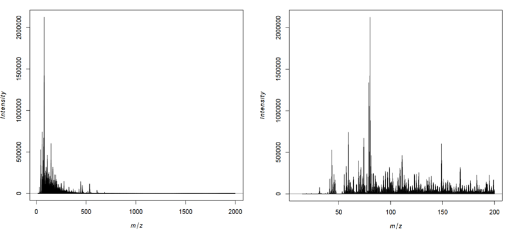

Mass spectrometry imaging (MSI) is applied to measure the spatial distribution of hundreds of biomolecules in a sample. A mass spectrometer scans over the entire sample and collects a mass spectrum every 5-200 µm. This results in thousands of spots (or pixels) for each of which a mass spectrum is acquired. Each mass spectrum consists of hundreds of analytes that are measured by their mass-to-charge (m/z) ratio. For each analyte the peak intensity in the mass spectra of every pixel is known and can be set together to map the spatial distribution of the analyte in the sample.
The technique has a broad range of applications as it is able to measure many different kinds of analytes such as peptides, proteins, metabolites or chemical compounds in a large variety of samples such as cells, tissues and liquid biopsies. Application areas include pharmacokinetic studies, biomarker discovery, molecular pathology, forensic studies, plant research and material sciences. The strength of MSI is the simultaneous analysis of hundreds of analytes in an unbiased, untargeted, label-free, fast and affordable measurement while maintaining morphological information.
Depending on the analyte of interest and the application, different mass spectrometers are used. A mass spectrometer measures the analytes by ionizing, evaporating and sorting them by their mass-to-charge (m/z) ratio. Put simply, a mass spectrometer consists basically of three parts: an ionization source, a mass analyzer and a detector. The most common ionization sources for MSI are MALDI (Matrix Assisted Laser Desorption/Ionization), DESI (Desorption Electrospray Ionization) and SIMS (Secondary Ion Mass Spectrometry).
Figure 1: MALDI TOF imaging of a mouse kidney
One common type of mass spectrometer for MSI is a MALDI Time-Of-Flight (MALDI-TOF) device. During MALDI ionization, a laser is fired onto the sample, which has been covered with a special matrix that absorbs the laser energy and transfers it to the analytes. This process vaporizes and ionizes the analytes. As they are now charged, they can be accelerated in an electric field towards the TOF tube. The time of flight through the tube to the detector is measured, which allows calculation of the mass over charge (m/z) of the analyte, as both mass and charge are correlated with time of flight. During measurement, complete mass spectra with hundreds of m/z - intensity pairs are acquired in thousands of sample plots, leading to large and complex datasets. Each mass spectrum is annotated with coordinates (x,y) that define its location in the sample. This allows visualization of the intensity distribution of each m/z feature in the sample as a heatmap.
Depending on the analyte of interest, the sample type and the mass spectrometer, the sample preparation steps as well as the properties of the acquired data vary. Apart from these differences, the preparation and measurement of the sample is normally straightforward, while the analysis of the large and complex dataset is the main bottleneck of a MSI experiment.
In this tutorial we will determine analytes with a localized distribution in a chilli cross section. The data analysis steps can be transferred to any other application in which the morphological distribution of an analyte in a sample is analyzed. A common application is studying the distribution of a drug and its metabolites in an animal model to better understand pharmacokinetic properties of the drug.
In this tutorial we will use the chilli dataset generated in the lab of Robert Winkler at the CINVESTAV institute in Irapuato (Mexico) and deposited at Zenodo. The data was acquired to demonstrate their self-made low-cost ‘plug and play’ MSI system as well as their open source R scripts and to show they allow the direct spatially resolved detection of volatile organic compounds (VOCs) from plant tissue (Maldonado-Torres et al. and Gamboa-Becerra et al.).
The mass spectrometer consisted of a low-temperature plasma (LTP) ionization source coupled to a quadrupole mass analyzer. This ionization source allows measurement of semi-volatile organic compunds directly from fresh material under ambient conditions without destruction of the sample. To get an idea how this set up and the chilli looks, have a look at their video and website. The chilli (Capsicum annuum) was purchased from a local market in Irapuato, Mexico and longitudinally cut into a slice of 80 x 35 mm and 4 mm thickness and laid onto a glass slide. Mass spectra were acquired with a spatial resolution of 1 mm and in a mass range from 15 – 2000 Thomson (Th, unit of m/z) to measure semi-volatile and volatile organic compounds (VOCs).
We will check the properties of the dataset and then perform a similar analysis to that described by Gamboa-Becerra et al.: plotting an average mass spectrum, filtering the dataset for the relevant m/z range, automatical generation of m/z images to find analytes that correspond to morphological features and generating an image that overlays three different analytes.
Figure 2: Cross section of a chilli in a similar orientation as in the publication by Gamboa-Becerra
Get data
The imzML composite file consists of two files. The first file contains the metadata in an XML file and has the extension .imzML. The second file contains the mass spectra data, is saved as a binary file and has the extension .ibd. To be valid, both files must have the same filename before the extension. More information about the imzML file structure can be found here: ms-imaging.org. Galaxy provides a composite upload option for files consisting of several components.
hands_on Hands-on: Data upload
Create a new history and give it a name.
tip Tip: Creating a new history
Click the new-history icon at the top of the history panel
If the new-history is missing:
Click on the galaxy-gear icon (History options) on the top of the history panel
Select the option Create New from the menu
Upload the data from Zenodo via the composite option
tip Tip: Upload via the composite option
Open the Galaxy Upload Manager(galaxy-upload on the top-right of the tool panel)
Click on Composite on the top
Set Composite Type to imzml
Expand the first Select button (for the imzML metadata component)
The file consists of three components and is therefore uploaded via the ‘composite’ function, analogously to the imzML upload.
The files to select in the composite tab are the header file .hdr, the m/z values file .t2m and the spectra file .img.
Rename the data into ltpmsi-chilli
tip Tip: Rename a dataset
Click on the galaxy-pencilpencil icon for the dataset to edit its attributes
In the central panel, change the Name field to ltpmsi-chilli
Click the Save button
Exploring and filtering the chilli dataset
Quality control of the data
Before starting any analysis it is important to check the characteristics and quality of the MSI data. The MSI quality control tool creates a comprehensive PDF report that contains multiple descriptive visualizations of different data attributes. Here we will use the MSI quality control to get an idea about the m/z range and the shape of the chilli section. More details about the MSI quality control tool can be found in the tutorial Mass spectrometry imaging 1: Loading and exploring MSI data.
“Mass accuracy to which the m/z values will be binned”: 0.1
“Unit of the mass accuracy”: mz
“PCA with 2 components”: Yes
Press Execute
comment Properties of the imzML file
To set the parameters for the mass spectrometry imaging tools correctly the following three parameters should be known about the dataset: 1) is the imzML file type processed or continuous, 2) are the spectra in profile or centroided mode and 3) the accuracy of the mass spectrometer. For the chilli dataset the publication states that it is a processed imzML type in centroided mode. This information can also be extracted by opening the local imzML component of the file in a text editor or web browser. Line 10 and 11 state:
This means that the file consists of 4166 spectra (count=”4166”) and that the imzML type is ‘processed’ as the first spectrum (scan=”1”) has 11127 m/z values (defaultArrayLength=”11127) while the following spectra (not shown here) have different numbers of m/z values. In processed imzML files each spectrum has an individual m/z axis, in contrast to the continuous imzML type, where all spectra have the same m/z axis. In many software tools processed imzML files are not or only partly supported. The MSI tools in Galaxy are based on Cardinal and therefore support imzML files, but require a binning of the m/z values while reading the file. The bin size should be chosen according to the m/z accuracy of the mass spectrometer. For the chilli dataset we therefore use 0.1 m/z, as this results in m/z bins of 0.2 m/z which corresponds to the m/z step size that was used in the publication.
Regarding the spectra, line 10 states that the spectra are in profile mode while the ‘run’ section defines spectrum 1 as a centroided spectrum. As the ‘run’ section is directly linked to the spectra in the ibd file, this is the information to trust. Furthermore, the ‘dataProcessingList’ element gives a hint that peak picking was performed, which is confirmed in the publication.
question Questions
In what m/z range were the data acquired?
How many spectra (pixels) were measured?
In which images can you guess the shape of the chilli?
solution Solution
The measured m/z range was m/z 15 - 2000.
4166 spectra were measured.
The rough shape of the chilli section is visible in the “Number of peaks per spectrum”; “TIC per spectrum” and “PCA result” images.
Open the quality report with the eye button and check the summary table on the first page to answer question 1 and 2. The shape of the chilli can roughly be seen in the images showing the number of peaks per spectrum and the total ion current, with higher values in the middle part of the fruit that roughly corresponds to the placenta. In the PCA image the complete chilli, except for the lowest part of the fruit, is visible in light colours compared to the dark background.
To further investigate mass spectra of different chilli compartments we select one pixel for each tissue area (pericarp, placenta and seeds) from the total ion current image. Knowing the exact shape of the chilli tissue from Figure 4 of the publication helps to find the corresponding areas. This are the pixels we have chosen for the tutorial:
The relevant m/z range for VOCs was not known before the measurement and therefore chosen quite liberally. The average mass spectra plots give a hint about the relevant m/z range of the sample with most peaks below 750 Th and no distinct peaks above 750 Th.
Figure 4: Example plots from the quality report
Plotting average mass spectra
We will follow up on the average mass spectra plots from the quality control report as well as on the differences between mass spectra from different chilli compartments. First, we generate more zoomed in mass spectra plots to get an idea about the m/z range that is relevant for VOCs. Next, we will plot and compare mass spectra that derive from different regions of the chilli.
“Mass accuracy to which the m/z values will be binned”: 0.1
“Unit of the mass accuracy”: mz
“Choose spectra (pixel)”: All spectra
In “zoomed in m/z range”: Manual input
Click on “Define min m/z and max m/z for the plotting window”:
In “1: Define min m/z and max m/z for the plotting window”:
“lower m/z boundary for plotting window”: 10
“upper m/z boundary for plotting window”: 200
Click on “Define min m/z and max m/z for the plotting window”:
In “2: Define min m/z and max m/z for the plotting window”:
“lower m/z boundary for plotting window”: 200
“upper m/z boundary for plotting window”: 500
Click on “Define min m/z and max m/z for the plotting window”:
In “3: Define min m/z and max m/z for the plotting window”:
“lower m/z boundary for plotting window”: 500
“upper m/z boundary for plotting window”: 1000
Click on “Define min m/z and max m/z for the plotting window”:
In “4: Define min m/z and max m/z for the plotting window”:
“lower m/z boundary for plotting window”: 1000
“upper m/z boundary for plotting window”: 1500
Click on “Define min m/z and max m/z for the plotting window”:
In “5: Define min m/z and max m/z for the plotting window”:
“lower m/z boundary for plotting window”: 1500
“upper m/z boundary for plotting window”: 2000
question Questions
What is the approximate m/z of the heaviest peak visible in the average spectra plot of the complete m/z range?
What is the approximate m/z of the peak with the highest average intensity?
solution Solution
There is a tiny peak at m/z ~760.
The highest peak is at ~80 m/z, which can best be seen in the mass spectrum between 15 and 200 m/z.
In the average spectrum of the complete m/z range there are no visible peaks above 800 Th. Most of the high intensity peaks are below 300 Th, which corresponds to the typical masses of VOCs. Even in the zoomed mass spectra between 1500 and 2000 Th only a few distinct peaks can be identified in the noise. In accordance with Gamboa-Becerra et al., we will restrict further analysis to the m/z range between 15 and 1000.
Figure 5: Complete and zoomed in average mass spectra
We will rerun the MSI plot spectra tool and add annotation to the pixels that correspond to different chilli compartments.
hands_on Hands-on: Mass spectra of different chilli compartments
Create a tabular file with the coordinates of interest and rename it:
x y compartment
39 53 seeds
50 44 placenta
25 60 pericarp
tip Tip: Creating a new file
Open the Galaxy Upload Manager
Select Paste/Fetch Data
Paste the file contents into the text field
From the settings menu galaxy-gear select Convert spaces to tabs
Press the rerun button, changing only the following:
“Choose spectra (pixel) and/or add spectra annotations”: Single spectra
param-file“Load tabular file with pixel coordinates”: annotations (Input dataset)
“Column with x values”: column:1
“Column with y values”: column:2
“Column with pixel annotations”: column:3
“Tabular file contains a header line”: Yes
question Questions
Which compartment does the highest intensity peak belong to?
Which compartment does the third-highest intensity peak belong to?
solution Solution
The highest intensity peak at around 80 Th belongs to the spectrum that is located in the pericarp of the chilli.
The peak at around 60 Th belongs to the spectrum that is located in the seeds.
Figure 6: Mass spectra for single pixels of different compartments
The single spectra that derive from different chilli compartments show some major differences. You should keep in mind that these are single spectra and therefore the intensities can be different to the average intensity of the compartment. Looking at the m/z range between 1000 and 2000, we realize that there are a number of distinct peaks which were hidden in the noise of the average spectrum, which contained all background spectra as well as the spectra of the chilli. In accordance with the original publication, and to speed up computation time, we focus on the low m/z range, but for a deeper analysis it could also be worth analyzing the higher m/z range.
“Mass accuracy to which the m/z values will be binned”: 0.1
“Unit of the mass accuracy”: mz
“Select m/z feature filtering option”: m/z range (manually)
“Minimum value for m/z”: 15.0
“Maximum value for m/z”: 1000.0
question Questions
How many m/z features are left in the output dataset?
How many m/z features were removed?
solution Solution
After filtering 4926 m/z features are left.
The dataset originally had 9927 m/z features; after filtering 4926 are left, which means that 5001 were removed.
The MSI tools are only able to write outputs as continuous imzML format; therefore, from now on the dataset is in continuous imzML format and “processed imzML file” can be set to ‘no’ in the following tools.
Multiple and overlayed analyte images
Automatic generation of analyte images
The main question for the chilli dataset is which m/z features have a localized distribution in the fruit. This question can be addressed by automatically generating distribution images for all analytes (m/z features) and then visually identifying which features are localized in specific compartments of the fruit. Gamboa-Becerra et al. scan the m/z range with a step size of 0.2 Th and a tolerance of 0.4 Th, which resulted in more than 2000 images which they visually explored for localized features. In this training we will only generate images for the two mass ranges where we have already seen high intensity peaks in the spectra plots: around 60 and 80 Th.
This requires three steps. Firstly, all m/z features of the dataset with the MSI data exporter are extracted. Secondly, all m/z features are filtered in the m/z ranges that we are interested in: between 55 and 65 Th, as well as between 75 and 85 Th (this step can be skipped to obtain distribution images for all features). Thirdly, the MSI m/z image tool is used to automatically generate distribution images for each of the m/z from the second step. As the data is already binned to 0.2 Th, only the m/z tolerance of 0.4 Th has to be specified. The large tolerance was chosen to obtain images from overlapping m/z ranges to make the signal intensity more robust against small m/z inaccuracies in individual mass spectra.
hands_on Hands-on: Generation of multiple analyte images
MSI data exporterTool: toolshed.g2.bx.psu.edu/repos/galaxyp/cardinal_data_exporter/cardinal_data_exporter/2.6.0.0
param-file“MSI data”: filtered imzML (output of MSI filteringtool)
“Centroided input”: yes
“Multiple output files can be selected”: mz feature output
Filter data on any column using simple expressionsTool: Filter1
param-file“Filter”: MSI data exporter on data 6: features (output of MSI data exportertool)
“With following condition”: c2>=55 and c2<=65 or c2>=75 and c2<=85
param-file“MSI data”: filtered imzML (output of MSI filteringtool)
“Centroided input”: yes
param-file“m/z of interest (e.g. internal Calibrants)”: Filter on data (output of Filtertool)
“Column with m/z values”: column:2
“Column with name of m/z values”: column:1
“Tabular file contains a header line”: Yes
“Contrast enhancement”: suppression
“M/z range”: 0.4
question Questions
Which are the two analyte images that show the most localized distribution?
Which compartments are the two features localized in?
solution Solution
Defining the exact m/z with the best localization is quite tricky. Between 61.8 and 62.6 Th there is a localized feature, as well as between 84 and 84.4 Th. We can choose 62.2 and 84.2 to get the best images (in the publication it was 62.1 and 84.1).
The comparison of the feature localization with the chilli image shows that the 62.2 Th feature is located in the seeds and the 84.2 Th feature more uniformly in the placenta and pericarp.
Figure 7: Distribution images for the analytes with the most localized distribution
In this tutorial we only evaluated 102 features, while the authors of this study evaluated more than 2000 images visually. This process is time-consuming and biased by the judgment of the scientist, but nonetheless this method seems to be quite common. Several attempts have been made to circumvent this process and obtain m/z features with localized distribution automatically, for example by Alexandrov and Bartels and Ingelese et al..
After m/z features with a localized distribution have been found, it is interesting to identify them. Gamboa-Becerra et al. performed additional gas and liquid chromatography mass spectrometry (GC-MS and LC-MS) which enabled the identification of several features with high certainty. Unfortunately the highly localized features at 62.2 and 84.2 Th could not be identified, but the defined localization implies their biological importance. Several capsaicinoids could be identified, amongst them capsaicin (306.6 Th).
comment Identification of m/z features
The identification of m/z features in MSI experiments is not always necessary, but can increase the confidence in the analysis and the molecular understanding. m/z features are either matched to databases or for more confidence another experiment is performed on the same sample to restrict the identification possibilities to analytes that are actually present in the sample. In this study other mass spectrometry techniques were applied, allowing identification of several m/z features, but at the same time features with defined localization could not be identified (e.g. 62.2 Th and 84.2 Th). These molecules may be fragments, metabolites or contaminants that are not available with the used mass spectrometry techniques.
Targeted analysis can be performed if the m/z of the molecule of interest is already known (e.g. when studying the tissue distribution of a drug and its known metabolites). In this case distribution images for the molecules of interest are a good starting point and scanning through all m/z features might not be necessary.
Overlay image for three analyte features
To get an idea about the distribution of capsaicin in the chilli we will plot its distribution in an overlay image with the two unknown but localized features 62.2 Th and 84.2 Th.
hands_on Hands-on: Overlay image for several m/z features
Create a tabular file with the m/z of interest and rename it to ‘mz features’:
Batut et al., 2018 Community-Driven Data Analysis Training for Biology Cell Systems 10.1016/j.cels.2018.05.012
details BibTeX
@misc{metabolomics-msi-analyte-distribution,
author = "Melanie Föll and Maren Stillger",
title = "Mass spectrometry imaging: Examining the spatial distribution of analytes (Galaxy Training Materials)",
year = "2021",
month = "01",
day = "06"
url = "\url{/training-material/topics/metabolomics/tutorials/msi-analyte-distribution/tutorial.html}",
note = "[Online; accessed TODAY]"
}
@article{Batut_2018,
doi = {10.1016/j.cels.2018.05.012},
url = {https://doi.org/10.1016%2Fj.cels.2018.05.012},
year = 2018,
month = {jun},
publisher = {Elsevier {BV}},
volume = {6},
number = {6},
pages = {752--758.e1},
author = {B{\'{e}}r{\'{e}}nice Batut and Saskia Hiltemann and Andrea Bagnacani and Dannon Baker and Vivek Bhardwaj and Clemens Blank and Anthony Bretaudeau and Loraine Brillet-Gu{\'{e}}guen and Martin {\v{C}}ech and John Chilton and Dave Clements and Olivia Doppelt-Azeroual and Anika Erxleben and Mallory Ann Freeberg and Simon Gladman and Youri Hoogstrate and Hans-Rudolf Hotz and Torsten Houwaart and Pratik Jagtap and Delphine Larivi{\`{e}}re and Gildas Le Corguill{\'{e}} and Thomas Manke and Fabien Mareuil and Fidel Ram{\'{\i}}rez and Devon Ryan and Florian Christoph Sigloch and Nicola Soranzo and Joachim Wolff and Pavankumar Videm and Markus Wolfien and Aisanjiang Wubuli and Dilmurat Yusuf and James Taylor and Rolf Backofen and Anton Nekrutenko and Björn Grüning},
title = {Community-Driven Data Analysis Training for Biology},
journal = {Cell Systems}
}
congratulations Congratulations on successfully completing this tutorial!
 Melanie Föll
Melanie Föll Maren Stillger
Maren Stillger